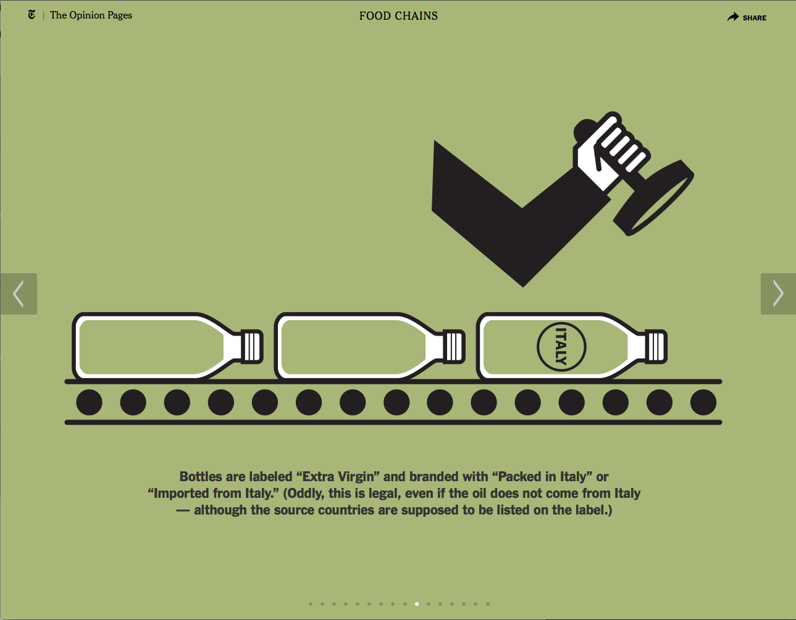

February 12, 2014 - My favorite internet thing.

Extra Virgin Suicide
This week's cool internet thing was discovered in my Advanced Design 2 class this week. My teacher was showing us examples of what we could do for our upcoming project when she brought up a NY Times interactive article titled: "Extra Virgin Suicide: The Adulteration of Olive Oil, which illustrates how a good amount of available olive oil we buy in grocery stores is not actually what the companies claim it to be.
The website uses a series of slides accompanies by subtle animations to aid in its storytelling, which I think made for an interesting and dynamic read. The piece also had a paper equivalent for the newspaper, and despite the different media, I feel like the two translate well back and forth.
Back